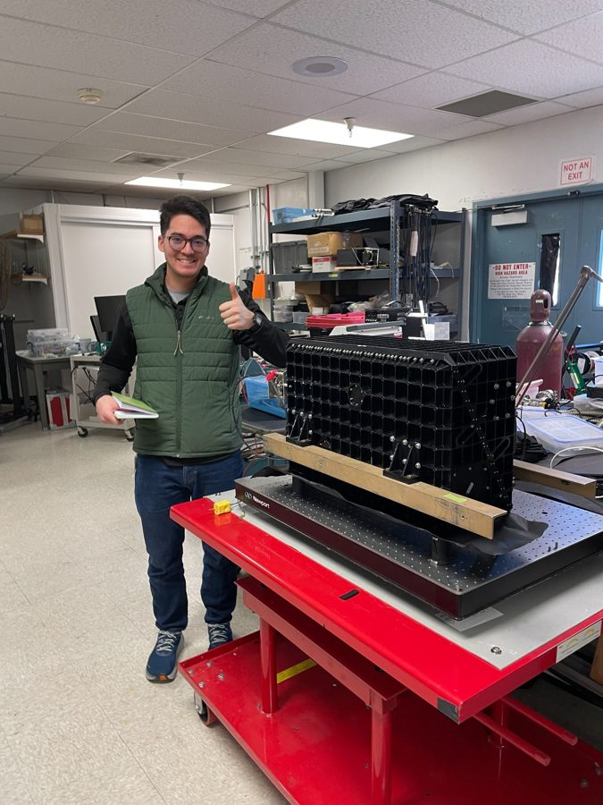

Land, water, and working landscapes
I am interested in conservation across forests, farms, wetlands, prairies, transportation corridors, watersheds, and community spaces.
Conservation • Stewardship • GIS • Public Service
I help conservation work move forward across ecosystems, land use types, agencies, and communities.
My background includes Tribal stewardship, GIS, forestry, working lands, conservation finance, field research, public engagement, and partnership-based project management. Across that work, I am focused on the larger conservation system: land, water, people, infrastructure, policy, funding, and long-term care.
Quentin Ikuta, M.S.
Conservation and stewardship professional working across natural resources, GIS, Tribal engagement, and public-interest implementation.
A whole landscape lens
Good stewardship rarely fits inside one program, one map layer, one funding source, or one resource area.
I am interested in conservation across forests, farms, wetlands, prairies, transportation corridors, watersheds, and community spaces.
I bring experience supporting Tribal stewardship projects, partner coordination, technical communication, and respectful relationship-based engagement.
I use spatial tools and field-informed analysis to help people see patterns, evaluate options, and move from ideas to practical stewardship outcomes.
Broad sector fit
My work is applicable to natural resource agencies, agriculture and water programs, transportation landscapes, economic and community development, nonprofits, Tribal partners, counties, cities, and watershed organizations.
I am drawn to civil service because durable conservation depends on strong institutions, thoughtful consultation, practical implementation, and trust with communities most connected to the land.
Experience in practice

